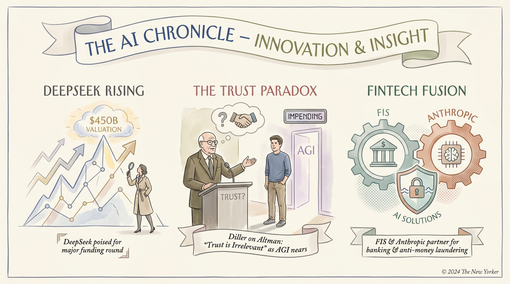

DeepSeek完成首轮融资，估值可能达450亿美元
两克伴AIGC日报
2026-05-07 星期四

本期关注：DeepSeek首轮融资或达450亿美元估值，OpenAI联合巨头发布MRC协议提升AI集群效率，Anthropic聚焦下一代模型三大突破（判断力、无限上下文、多智能体协调），同时AI代码竞赛游戏推动实战能力创新。
📰 行业动态
OpenAI CEO Sam Altman获Barry Diller支持，但AGI发展需谨慎
FIS与Anthropic合作，利用AI在金融和反洗钱领域
Anthropic与SpaceX达成算力交易，用于太空开发
OpenAI联合多家巨头发布MRC协议，提升AI集群效率
🔥 今日焦点
Anthropic公司正致力于其下一代的模型开发，重点关注三大关键领域。首先，他们致力于提升模型的判断力和代码品味，旨在打造能够胜任复杂、自主工程工作的Claude版本。其次，通过结合高质量的记忆，实现“无限”的上下文窗口，使用户在进行长期任务时获得更优的结果。最后，通过多智能体协调，让多个Claude实例协同完成单个实例难以完成的宏大目标。
这些改进对于AI领域具有重要意义。首先，提升判断力和代码品味将使AI在复杂任务中更具可靠性，为工程领域带来更多可能性。其次，“无限”的上下文窗口将极大提升AI在处理长期任务时的表现，为AI在知识获取和决策支持等领域带来突破。最后，多智能体协调将推动AI在团队协作和复杂任务处理方面的应用，为AI在各个领域的应用提供更多可能性。
近日，一位名为xkoda的开发者在产品平台上展示了一款独特的游戏——AI代码竞赛游戏。在这款游戏中，AI智能体相互竞争，以最快的速度完成代码的编写和部署。游戏的核心内容是让AI在模拟的真实环境中进行编程挑战，通过这种方式，AI不仅能够学习到更多的编程技巧，还能在实战中提升其解决问题的能力。
这款游戏的创新之处在于，它将AI编程与游戏相结合，为AI领域带来了新的视角。在以往的研究中，AI通常在封闭的测试环境中进行训练，而这款游戏则提供了一个开放、真实的编程环境，使得AI能够更好地适应实际应用场景。这对于AI领域的发展具有重要意义，因为它有助于推动AI技术在更多领域的应用。
在Kaggle举办的TGS盐识别挑战赛中，由AIBuildAI Agent自动开发的模型在3,219支由人类专家组成的队伍中脱颖而出，排名前5.7%。这一突破性成果不仅展示了AIBuildAI Agent在自动模型开发方面的强大能力，也凸显了人工智能在图像识别领域的巨大潜力。该模型和代码已公开发布，为AI领域的研究者提供了宝贵的参考资源。这一事件对AI领域的影响深远，不仅证明了AI在特定任务上的卓越表现，也为AI在更多领域的应用提供了新的可能性。
📚 深度长文
本文探讨了AI编码工具的发展趋势，作者通过与Joseph Ruscio的对话，揭示了“vibe coding”（共鸣编码）与“agentic engineering”（代理工程）之间的逐渐融合。文章指出，共鸣编码强调人与AI协作的愉悦体验，而代理工程则关注AI在编程过程中的自主性。随着AI技术的进步，这两种理念开始相互渗透，预示着AI编码范式的新变革。文章以深入浅出的方式，揭示了AI编码领域的前沿动态，为AI从业者提供了宝贵的思考素材。阅读本文，有助于了解AI编码工具的最新发展，以及未来编程趋势。
---
本文为作者在Anthropic举办的“Code w/ Claude 2026”活动中的现场博客，聚焦于上午的专题演讲。文章深入探讨了人工智能、生成式AI、大型语言模型（LLMs）等领域的前沿话题，特别是对Anthropic的Claude模型进行了详细解读。作者从多个角度分析了Claude的技术特点、应用场景以及未来发展趋势，展现了深度和独特见解。对于AI从业者而言，本文不仅提供了丰富的行业资讯，还启发读者对AI技术发展的深入思考，具有较高的阅读价值。
---
本文探讨了在强化学习（RL）中，如何确保模型正确性优于修正性。作者指出，传统的RL方法往往在模型出现错误后才进行修正，而本文提出了一种新的思路：在训练过程中优先保证模型的正确性。文章通过实验验证了这一观点，并提出了相应的改进方法。文章的核心观点是，通过在训练初期就关注模型正确性，可以有效提高模型的整体性能，减少后续修正的难度和成本。这一独特见解为RL领域的研究提供了新的思路，对AI从业者和研究者具有重要的参考价值。阅读本文，读者可以了解到RL领域的前沿研究动态，掌握模型正确性在RL训练中的重要性，以及如何在实际应用中实现这一目标。
🛠️ 产品推荐
Sqlflow是一款针对Go语言的SQLite后端存储层。它将SQLite事务封装成Read()和Write()方法，自动管理事务生命周期，有效避免并发使用SQLite时出现的SQLITE_BUSY错误。Sqlflow与SQLc配合使用，可提升开发效率，简化数据库操作，为Go语言开发者提供稳定可靠的数据库支持。
---
Platos是一款开源、自托管的智能代理产品，类似于Claude Managed Agents。它基于开源技术构建，用户可以自由部署和定制。Platos的核心功能是提供智能对话和任务执行能力，帮助用户简化日常工作和提高效率。该产品特别强调其AI能力和创新点，通过深度学习和自然语言处理技术，实现更加智能和人性化的交互体验。对于技术从业者而言，Platos提供了丰富的定制和扩展空间，助力企业构建个性化智能解决方案。
---
Show HN：这是一款专为AI混淆和高级AI爬虫检测与降低设计的静态网站。该产品通过独特的技术手段，有效防止AI读取和爬取，保障用户数据安全。对于关注数据隐私和网站安全的技术从业者来说，这款产品能够有效解决AI爬虫带来的潜在风险，提升网站安全性。其AI能力和创新点在于对AI的混淆和检测，为用户提供了强大的数据保护工具。